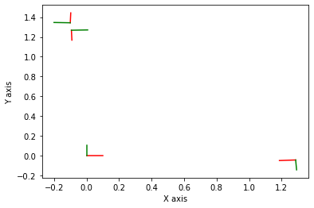

Pose2 SLAM with g2o Files

2.3. Pose2 SLAM with g2o Files¶
The example below is a Pose SLAM example that reads from “g2o” files:
%pip -q install gtbook # also installs latest gtsam pre-release
Note: you may need to restart the kernel to use updated packages.
import gtsam
import matplotlib.pyplot as plt
from gtsam.utils import plot
Set some parameters:
maxIterations = 100
Read the file:
g2oFile = gtsam.findExampleDataFile("noisyToyGraph.txt")
graph, initial = gtsam.readG2o(g2oFile, is3D=False)
Add prior on the pose having index (key) = 0
priorModel = gtsam.noiseModel.Diagonal.Variances(
gtsam.Point3(1e-6, 1e-6, 1e-8))
graph.add(gtsam.PriorFactorPose2(0, gtsam.Pose2(), priorModel))
Create Gauss-Newton optimizer and optimize:
params = gtsam.GaussNewtonParams()
params.setVerbosity("Termination")
params.setMaxIterations(maxIterations)
# parameters.setRelativeErrorTol(1e-5)
# Create the optimizer ...
optimizer = gtsam.GaussNewtonOptimizer(graph, initial, params)
# ... and optimize
result = optimizer.optimize()
print("Optimization complete")
print("initial error = ", graph.error(initial))
print("final error = ", graph.error(result))
Optimization complete
initial error = 0.3916375099488787
final error = 0.06850346649982364
Warning: stopping nonlinear iterations because error increased
errorThreshold: 0.0685035 <? 0
absoluteDecrease: -2.28853697639e-05 <? 1e-05
relativeDecrease: -0.000334187727181 <? 1e-05
iterations: 3 >? 100
print("\nFactor Graph:\n{}".format(graph))
print("\nInitial Estimate:\n{}".format(initial))
print("Final Result:\n{}".format(result))
Factor Graph:
NonlinearFactorGraph: size: 6
Factor 0: BetweenFactor(0,1)
measured: (0.774115, 1.183389, 1.576173)
noise model: unit (3)
Factor 1: BetweenFactor(1,2)
measured: (0.869231, 1.031877, 1.579418)
noise model: unit (3)
Factor 2: BetweenFactor(2,3)
measured: (1.35784, 1.034262, 1.56646)
noise model: unit (3)
Factor 3: BetweenFactor(2,0)
measured: (0.303492, 1.865011, -3.113898)
noise model: unit (3)
Factor 4: BetweenFactor(0,3)
measured: (-0.928526, 0.993695, -1.563542)
noise model: unit (3)
Factor 5: PriorFactor on 0
prior mean: (0, 0, 0)
noise model: diagonal sigmas [0.001; 0.001; 0.0001];
Initial Estimate:
Values with 4 values:
Value 0: (gtsam::Pose2)
(0, 0, 0)
Value 1: (gtsam::Pose2)
(0.774115, 1.183389, 1.576173)
Value 2: (gtsam::Pose2)
(-0.26242, 2.047059, -3.127594)
Value 3: (gtsam::Pose2)
(-1.605649, 0.993891, -1.561134)
Final Result:
Values with 4 values:
Value 0: (gtsam::Pose2)
(-7.53891792e-23, -3.04401701e-24, 1.41745664e-24)
Value 1: (gtsam::Pose2)
(0.95617894, 1.14319823, 1.54150027)
Value 2: (gtsam::Pose2)
(0.126611466, 1.98179453, -3.08397402)
Value 3: (gtsam::Pose2)
(-1.05038303, 0.935131621, -1.54052801)
resultPoses = gtsam.utilities.extractPose2(result)
for i in range(resultPoses.shape[0]):
plot.plot_pose2(1, gtsam.Pose2(resultPoses[i, :]))
plt.show()
